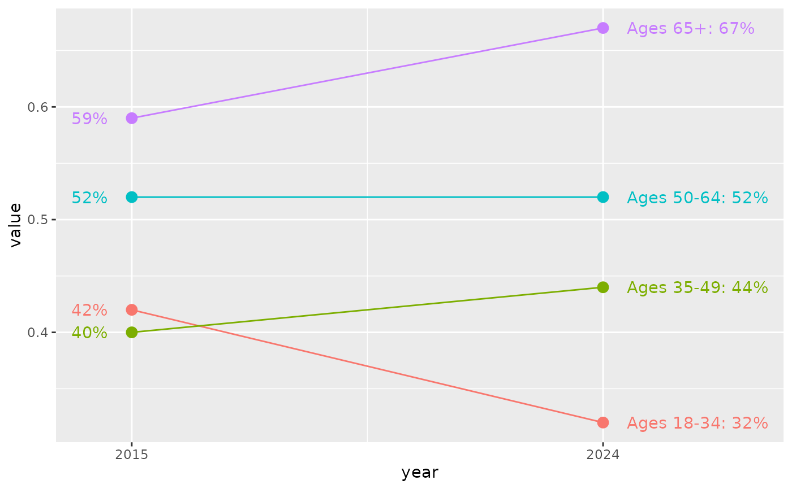
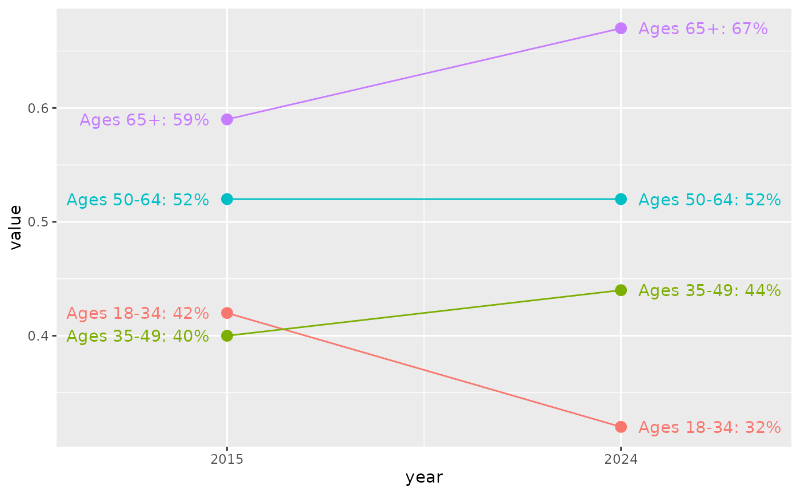

Easily put together labels for the endpoints of a chart, such as a line chart with outwardly-justified labels at each end. Labels with the formats {name}: {fun(value)} (long format) and {fun(value} (short format) will be created, such as "Connecticut: 12%" and "16%" respectively. Often one format will be used on one end and the other format on the other end, but long_side gives you some options around this. The intention around combining labels like this is so you can put labels on both ends, aligned nicely, in a single geom_text call.
Usage
endpoint_lbls(
data,
x,
value,
group,
mult = 0.05,
add = NULL,
fun = NULL,
long_side = c("right", "left", "both", "none")
)Arguments
- data
A data frame
- x
Bare column name of the independent value which has the start and finish points (probably a date). If this isn't numeric,
endpoint_lblswill try to coerce it to numeric, which may yield undesired results.- value
Bare column name of the value column
- group
Bare column name of the name or grouping variable that should be shown in the labels.
- mult
Numeric; ratio to the
xvariable by which labels should be offset. Default: 0.05.- add
Numeric; single value along the
xvariable by which labels should be offset. DefaultsNULL. If bothmultandaddare given,multtakes precedence. Previously there was afracargument which was supposed to act likemultbut erroneously acted likeadd.- fun
A function, used to create value labels.
scales::label_*functions will be very useful here. IfNULL(the default), no formatting is done.- long_side
Character, either
"right"(the default),"left","both", or"none". For"left"or"right", this refers to whether the longer label should be on the right or the left, returning a short label on the opposite side. If"both", only long labels are returned; if"none", only short labels are returned. Regardless, labels are combined in a new column calledlbl.
Value
A data frame: the original data frame passed in to data, with 3 additional columns:
x, the x-values with offsets addedjust, a column of 0 or 1 giving the justification value dependent on which end the label will appearlbl, a column of formatted label text
Examples
library(ggplot2)
# note that it will still be up to your judgment to set scale expansion,
# since that will depend on things outside the scope of just this function
cws_trend |>
dplyr::filter(question == "local_govt_responsive", category == "Age") |>
endpoint_lbls(
value = value, x = year, group = group,
fun = percent100
) |>
ggplot(aes(x = year, y = value, color = group)) +
geom_line() +
geom_point(size = 3) +
geom_text(aes(label = lbl, hjust = just, x = x)) +
scale_x_continuous(
expand = expansion(add = c(1, 3)),
breaks = c(2015, 2024)
) +
theme(legend.position = "none")

cws_trend |>
dplyr::filter(question == "local_govt_responsive", category == "Age") |>
endpoint_lbls(
value = value, x = year, group = group, long_side = "both",
fun = percent100, add = 0.4, mult = NULL
) |>
ggplot(aes(x = year, y = value, color = group)) +
geom_line() +
geom_point(size = 3) +
geom_text(aes(label = lbl, hjust = just, x = x)) +
scale_x_continuous(
expand = expansion(add = 3.5),
breaks = c(2015, 2024)
) +
theme(legend.position = "none")
